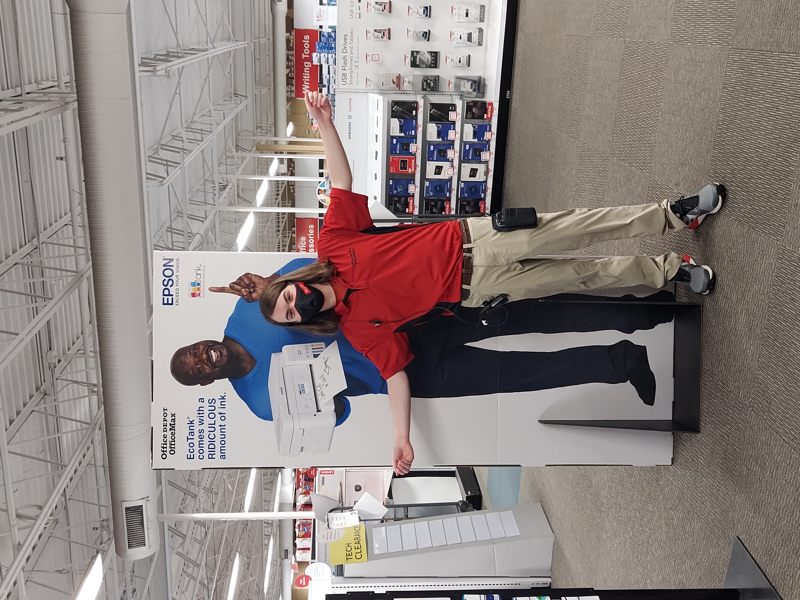
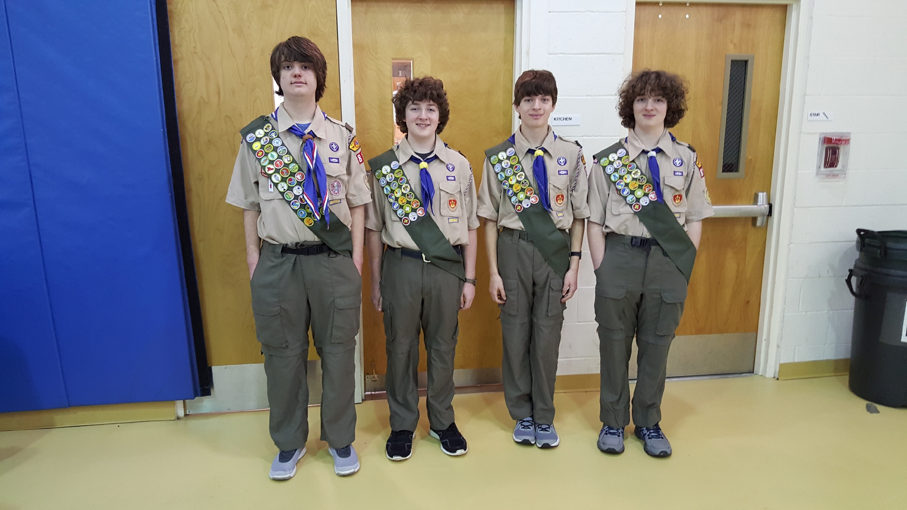
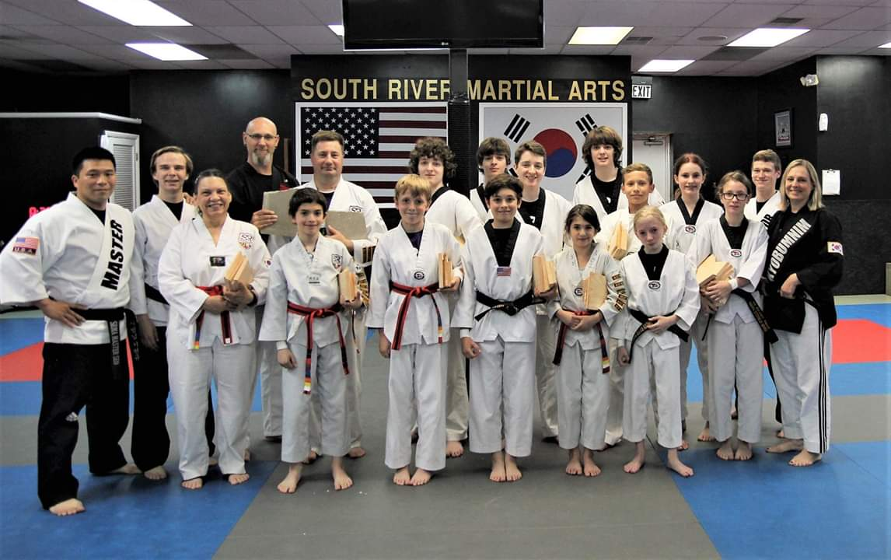

Previous Work Experience

Office Depot | Sales Advisor
-
Recommended, selected, and helped obtain merchandise for customers based on needs and
desires.
-
Directly contributed to the store meeting sales quotas, often making sales in excess of $100
per purchase.
-
Performed troubleshooting for common software issues. Identified and solved operational
problems with computers based on customer feedback and needs.
Anne Arundel Community College | Technology Learning Center Technical Assistant
-
Monitored labs, managed resources, and referred lab users to campus resources and services.
-
Performed technical troubleshooting for a variety of issues.
-
Assisted students in utilizing school programs and Microsoft Office.
Anne Arundel Community College | New Student Orientation Leader
-
Assisted in event production and delivery for over 10 New Student Orientation Sessions.
-
Engaged with new students and families at orientation sessions with over 50 attendees.
-
Spoke on Q & A panels and provided campus tours.
-
Gave tours to students and gave information relating to the campus and the programs that the students were enrolled in.
Activities

Boy Scouts of America - Eagle Scout
-
Achieved the rank of Eagle Scout.
-
Led a group of scouts and adults in restoring a section on the Annapolis Trail.
-
Worked as a partrol leader, being in charge of a of scouts during activities.

Tae-Kwon-Do - Leadership Team and Second Degree Black Belt
-
Achieved a Second Degree Black Belt in Tae-Kwon-Do over several years.
-
Participated in the dojo's Leadership Team, where I helped teach classes.
-
Assisted in the dojo's after-school and summer camp programs, where we helped kids learn Tae-Kwon-Do and encuraged good behavior.